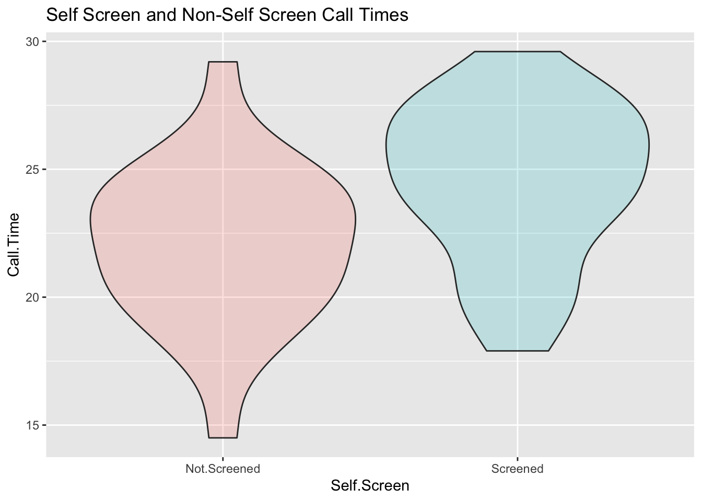
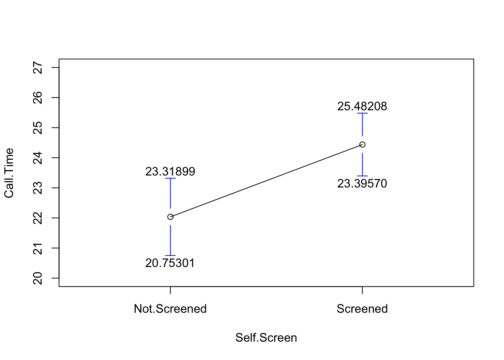

library(tidyverse); library(skimr);
Support.Times <- structure(list(Screened = c(26.9, 28.4, 23.9, 21.8, 22.4, 25.9,
26.5, 20, 23.7, 23.7, 22.6, 19.4, 27.3, 25.3, 27.7, 25.3, 28.4,
24.2, 20.4, 29.6, 27, 23.6, 18.3, 28.1, 20.5, 24.1, 27.2, 26.4,
24.5, 25.6, 17.9, 23.5, 25.3, 20.2, 26.3, 27.9), Not.Screened = c(24.7,
19.1, 21, 17.8, 22.8, 24.4, 17.9, 20.5, 20, 26.2, 14.5, 22.4,
21.1, 24.3, 22, 24.3, 23.9, 19.6, 23.8, 29.2, 19.7, 20.9, 25.2,
22.5, 23.1, NA, NA, NA, NA, NA, NA, NA, NA, NA, NA, NA)), class = "data.frame", row.names = c(NA, -36L))Some Data
I will start with some inline data.
Now I will use the tidyverse to stack it. This can also be done with stack(Support.Times).
stack(Support.Times) %>% drop_na()Using the tidyverse, the new data SSTimes will stack the data using pivot longer into two variables that I will name Self.Screen and Call.Time to store the stacked data. The final command drops the missing data. Then I will group them and skim them.
SSTimes <- Support.Times %>% pivot_longer(., c(Screened,Not.Screened), names_to = "Self.Screen", values_to = "Call.Time") %>% drop_na()
SSTimes %>% group_by(Self.Screen) %>% skim()| Name | Piped data |
| Number of rows | 61 |
| Number of columns | 2 |
| _______________________ | |
| Column type frequency: | |
| numeric | 1 |
| ________________________ | |
| Group variables | Self.Screen |
Variable type: numeric
| skim_variable | Self.Screen | n_missing | complete_rate | mean | sd | p0 | p25 | p50 | p75 | p100 | hist |
|---|---|---|---|---|---|---|---|---|---|---|---|
| Call.Time | Not.Screened | 0 | 1 | 22.04 | 3.11 | 14.5 | 20.00 | 22.4 | 24.30 | 29.2 | ▁▅▇▇▁ |
| Call.Time | Screened | 0 | 1 | 24.44 | 3.08 | 17.9 | 22.55 | 24.9 | 26.92 | 29.6 | ▃▃▆▇▅ |
So I have 25 observations that are not screened and 36 that are screened. What does it look like?
ggplot(SSTimes, aes(x=Self.Screen, y=Call.Time, fill=Self.Screen)) + geom_violin(alpha = 0.2) + scale_fill_discrete(guide=FALSE) + labs(title = "Self Screen and Non-Self Screen Call Times")Warning: The `guide` argument in `scale_*()` cannot be `FALSE`. This was deprecated in
ggplot2 3.3.4.
ℹ Please use "none" instead.
Here is a picture of the distributions of the two means.
gplots::plotmeans(Call.Time~Self.Screen, data=SSTimes, n.label=FALSE, ci.label=TRUE, ylim=c(20,27))
What does the t-test look like?
t.test(Support.Times$Not.Screened, Support.Times$Screened)
Welch Two Sample t-test
data: Support.Times$Not.Screened and Support.Times$Screened
t = -2.9793, df = 51.512, p-value = 0.004399
alternative hypothesis: true difference in means is not equal to 0
95 percent confidence interval:
-4.0216630 -0.7841148
sample estimates:
mean of x mean of y
22.03600 24.43889 t.test(Call.Time~Self.Screen, data=SSTimes)
Welch Two Sample t-test
data: Call.Time by Self.Screen
t = -2.9793, df = 51.512, p-value = 0.004399
alternative hypothesis: true difference in means between group Not.Screened and group Screened is not equal to 0
95 percent confidence interval:
-4.0216630 -0.7841148
sample estimates:
mean in group Not.Screened mean in group Screened
22.03600 24.43889 It is worth noting that R stores a bunch of stuff. For example, it stores the standard error of the difference and that is worth looking at in this case; the standard error that describes the difference in the averages is 0.8065242.
Resample.Times <- ResampleProps::ResampleDiffMeans(Support.Times$Screened,Support.Times$Not.Screened)
sd(Resample.Times)[1] 0.7953907